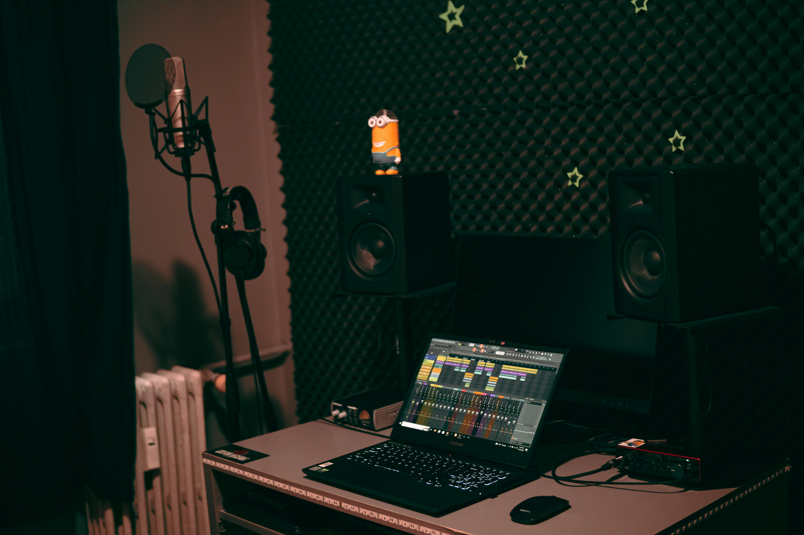

Vuitton Beats, also known as 8v8Beatz, is a music producer passionate about creating modern, hard-hitting trap sounds.
“My musical journey began with a fascination for the powerful beats and captivating melodies that define today’s trap sound. I strive to create instrumental tracks that capture the very essence of contemporary trap; every beat I produce is the result of hours of hard work, sonic experimentation, and a constant pursuit of perfection.
This project was born out of a passion for sound textures and visual aesthetics. Every beat tells a story, and every melody has a purpose: to make you feel something.”
Inspired by legends of the genre such as Lex Luger, Southside, Metro Boomin, TM88, Zaytoven, Honorable C.N.O.T.E., London On Da Track, and artists from the Atlanta scene, Vuitton Beats crafts each track as a sonic narrative.